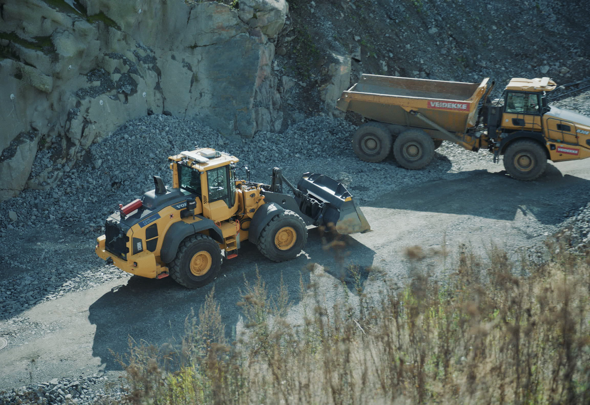

A wheel loader in a quarry, and the people around it.
How the operation runs today, what the customer measures us on, and where Hive stands. Written for engineering and product, and for whoever joins next.
Base case for the project meeting 18 September. Numbers carry their source in brackets. Open items are marked in red.
Why this document exists.
Engineering is about to set the wheel loader roadmap and build the infrastructure it runs on. Sales talks to the customer every day. This is the handover between the two, kept alive.
The problem we are paid to solve
A quarry, a recycling plant or an asphalt plant is a production unit. Material has to move every hour the plant runs. The wheel loader is the machine that keeps the crusher fed, the stockpiles in order and the trucks loaded. When it stops, the plant stops.
Today one person sits in that cab all shift. The site manager calls that person and says what to do for the next two to four hours. There is no system in between. [Ronny, 11 Sep 2026]
Who it is for
The site manager or production lead who owns the tonnage number. Behind them: the plant owner who signs, HSE who sets the rules around the machine, and the operators who work next to it.
What the customer does today, without us
Hires and rosters operators. Assigns work by phone or WhatsApp. Tracks tonnes through the weighbridge and the crusher. Accepts that a machine with no operator is a machine that does nothing.
What Hive does, in one sentence
We take charge of the machine in operation. A retrofitted Volvo wheel loader is run from our operations centre in Kristiansand, under supervised autonomy, with a person in the loop who takes the site manager's call exactly as the cab operator did. The customer keeps their system. [terminology memo, 2026]
Why now
Sites in Wales, Belgium, Germany, Sweden and western Norway are being commissioned this year, plus an asphalt plant in the UK, a recycling facility in Norway and a mine in the United States. [use-case deck, Sep 2026] The infrastructure being built now decides what those sites can get later. Requirements have to be written down with real values before the architecture hardens.
The quarry, from the top.
Rock is blasted from the face, crushed, screened into sizes, stockpiled, and sold by the tonne over a weighbridge. The wheel loader touches almost every step.

The material flow
- Blast. The face is drilled and blasted on a schedule, typically weekly or less. Everything stops and everyone leaves the zone while it happens.
- Muck out. Blasted rock (the muckpile) is loaded by excavator or wheel loader into haulers, or moved straight to the primary crusher.
- Crush and screen. Primary, then secondary and tertiary crushers reduce the rock. Screens sort it into fractions. Conveyors drop each fraction onto its own stockpile.
- Stockpile management. The wheel loader keeps the piles clear of the conveyor drop, blends fractions when a product needs it, and moves material between piles.
- Load out. Customer trucks arrive, the weighbridge issues a ticket, the loader fills the truck, the truck weighs out. This is where the quarry gets paid.
The loader has three jobs in this chain: feed the crusher, keep the piles right, load the trucks. Which one dominates depends on the site, and that decides what "good" means for the machine.
One number to hold on to
A bucket on an L180-class loader is around 6 tonnes. A site running continuous load-out can move around 600 tonnes an hour with one machine. That is one bucket every 35 to 40 seconds, all shift. It varies a lot between sites. [Ronny, 11 Sep 2026, example figure]
Quarry and aggregates. Where most of our machines are.Feiring Bruk at Hadeland, Hamar Pukk at Sørli, and the sites being commissioned across Europe.
Feiring Bruk, Hadeland. Volvo L180H, retrofitted. Runs remote from our control centre three hours away. Today: blending material and clearing away from the crusher. Next: moving blasted rock to a temporary stockpile. Then: loading customer lorries once the bucket scale is integrated. Cycle time under remote operation measured at 23 seconds scoop to dump, and the site judged the loads inside their commercial window. [use-case deck, Sep 2026]
Hamar Pukk og Grus, Sørli. Volvo L-series with our kit, run with Veidekke Infrastruktur and Telia under their remote and autonomous machinery programme. Autonomous wheel loader in quarry work, loading and moving material. [use-case deck, Sep 2026]
What "customer happy" means here. The crusher never waits for material. The piles do not bury the conveyor. Trucks are loaded inside the weighbridge window. Nobody walks into the machine's area unannounced.
Recycling. Feeding a line, indoors and out.Two wheel loaders and two forklifts feeding a paper line in Norway. Starting now.
The material is lighter, dirtier and less predictable than rock. The loader feeds a hopper or a conveyor that must not run empty, and moves bales and loose material between bays. Much of the work happens under a roof, with people and forklifts closer than in a quarry. [use-case deck: recycling facility, Norway, two wheel loaders and two forklifts feeding the paper line]
Asphalt plant. Cold feed bins on a clock.One site in the United Kingdom being commissioned this year.
An asphalt plant draws aggregate fractions from cold feed bins in a fixed recipe. The loader keeps each bin topped up from its stockpile. Miss a bin and the mix is off spec or the plant stops. The pattern repeats, the distances are short, and the timing is set by the plant, not the loader. [use-case deck: asphalt plant, United Kingdom]
Industrial plant. Fixed surroundings, high stakes.Yara at Herøya, our first larger customer. 18 months under contract.
Wheel loaders in the 18 tonne class moving fertilizer inside one of Europe's largest ammonia facilities. Pile to hopper, fixed surroundings. Started on tele-remote; the site has since asked for more autonomy in the cycle, and autonomy in production is planned from October 2026. Safety is a light barrier around the area: the machine stops if the beam is broken. [use-case deck, Sep 2026]
Mine. The orchestration layer arrives.Mariana Minerals in the United States is building the system that will send us tasks.
Most customers give the machine manual instructions: go and dig that part, move this to there. Mariana is different. They are building an orchestration layer that plans the whole operation and will send commands into our system to execute, including shape files that define which polygons to take out. [Ronny, 11 Sep 2026]
This matters for the roadmap in two ways. It is the most demanding integration we have, and it needs things no other customer needs yet. It is also the product we want to sell everyone else eventually: an orchestration layer that controls our machines and, later, other vendors' autonomous machines on the same site.
Five people and a phone.
Every task on a site passes through a handful of people. Two of them are ours. Know what each one cares about and most requirements explain themselves.

A day in the life: site manager at a quarry.Draft from Ronny's ten years as a site manager. To be validated against Feiring and Franzefoss.
| Time | What happens | Channel |
|---|---|---|
| 06:30 | Walks the plant. Checks which piles are low, which conveyor drop is getting buried, what the day's truck orders look like. | Eyes, weighbridge order list |
| 07:00 | Tells the loader operator the plan for the morning: clear under the 0-4 drop, then blend 8-16 for the afternoon order. | Phone call or face to face |
| 09:30 | A truck arrives early for a product nobody expected. Calls the operator to switch. | Phone, sometimes WhatsApp |
| 11:00 | Crusher stops on a blockage. Loader is redirected to load trucks until it restarts. | Phone |
| 13:00 | Blast window planned for tomorrow. Confirms with the shot firer where the loader must not be. | Meeting, paper plan |
| 15:00 | Checks tonnes over the weighbridge against the day's plan. Adjusts tomorrow. | Weighbridge system |
A day in the life: Hive remote operator and task coordinator.How the same day looks from Kristiansand.
How work gets assigned today.
Before Hive. One task, from the moment a truck turns in to the moment it leaves, laid out as a service blueprint. This is the process we plug into, so it is drawn without us first.
Three things to notice. The loader operator is interrupted constantly, and the interruptions arrive by voice. Nothing about the task is recorded except the weighbridge ticket. And the site manager is the scheduler, in their head, all day.
Variant: feeding the crusher.Same lanes, different rhythm. The crusher sets the pace and never calls.
Variant: blast day.Everything stops. Where the machine is parked, who says when it can move again.
Where Hive plugs in.
The same blueprint. Boxes with a red edge change. Everything else stays as the customer has it today, and that is the point of the offer.
Our competitive advantage is in column 2. The customer does not learn a new system. They call the number they always called. A person answers, understands the site, and makes the machine do it. That person is also what de-risks the operation for us while the autonomy matures. [Ronny, 11 Sep 2026]
Two models sit on this blueprint. Today's model: the task arrives by voice and a coordinator turns it into machine work. The Mariana model: the customer's orchestration layer sends structured commands and polygons straight into our system. The second is where we want every customer to end up. The first is what we sell now.

The machine model
Two phases. In the proof period Hive supplies the machine, our own Volvo L180, run remote, so the customer does not tie up one of theirs. When the operating contract starts, we retrofit one of the customer's own machines, two to three days, non-destructive. The customer owns the machine, Hive supplies the operators. [commercial model memo, Jun 2026]
The cycle and the numbers.
Everything the customer pays for reduces to this: how many times an hour the bucket goes round, how full it is, and how many hours a day it runs.
Feiring measured 23 seconds scoop to dump under remote operation. [use-case deck] Caterpillar quotes 27 to 33 seconds for a basic cycle with a competent operator in the cab, and a bucket fill factor of 60 to 75 percent for poorly blasted rock up to 80 to 95 percent for well blasted rock. [Cat wheel loader productivity guide] Those are the reference points. Our own numbers per site belong in the table below.
Per site: bucket, cycles, tonnes, hours.Manual versus remote versus what the contract requires.
| Site | Machine | Bucket, t | Cycle, s (manual) | Cycle, s (remote) | Tonnes/h achieved | Tonnes/h required | Hours/day | Source |
|---|---|---|---|---|---|---|---|---|
| Feiring Bruk, Hadeland | Volvo L180H | to fill | to fill | 23 | to fill | to fill | to fill | use-case deck |
| Yara, Herøya | 18 t class | to fill | to fill | to fill | to fill | to fill | to fill | |
| Hamar Pukk, Sørli | Volvo L-series | to fill | to fill | to fill | to fill | to fill | to fill | |
| Example site | L180 class | ~6 | ~600 | Ronny, 11 Sep 2026, illustrative |
Hours, not just seconds.Availability is where the money is. A fast cycle on a machine that stands still is worth nothing.
A cab operator works one shift with breaks, and the machine stands still when they do. A remote operated machine can be handed between operators and in principle runs the plant's hours, not the operator's. That is the productivity argument. It only holds if the machine is actually available, which is why availability is the first metric in chapter 8 and the one with a contractual threshold.
For calibration: fully autonomous mining fleets report availability in the high eighties to mid nineties, and OEE studies on mobile mining equipment often land far below the manufacturing "world class" figure of 85 percent. Those are dedicated haul trucks on closed roads, not retrofitted loaders on shared sites. Use them as a frame for what to measure, not as a target. [research note 11 Sep 2026, flagged]
What we operate inside.
The conditions the system is built for, stated so they can be tested. Borrowed from the ODD idea in road autonomy, used here as a working format, not a compliance claim.
| Dimension | Supported today | Source |
|---|---|---|
| Machine | Volvo wheel loaders L60 to L350, model year 2018 and later. Required on the machine: CDC steering with electric joystick on the left armrest, electric lift and tilt joystick (no hydraulic pilot), Optishift with RBB brake valve. Attachment link advance optional for CAN feedback. H-series versus K-series (2026 platform) is a separate check. PIN is not the gate. | Magnus Kjelland, 24 Aug 2026 |
| Site types | Quarry and aggregates, industrial plant with fixed surroundings, recycling, asphalt plant, mine. Snow clearing on a closed road has been run (Vikafjellet). | use-case deck |
| Task types | Blending, clearing under conveyor drop, pile to hopper, moving blasted rock to stockpile. Truck load-out pending bucket scale integration. | use-case deck |
| People and vehicles | Defined working area. Light barrier at Yara: machine stops if the beam is broken. Quarry sites: geofence plus site rules. | use-case deck |
| Network | Public 5G demonstrated (Telia, tunnel, operator 90 km away). Dedicated network at production sites. | use-case deck; to confirm per site |
| Weather, light, dust | to fill | engineering |
| Slope and surface | to fill | engineering |
Full taxonomy, per site.Scenery, environment, dynamic elements, machine state. One column per customer.
What happens when it breaks.Minimal risk condition per failure type. What the machine does, who is told, how work resumes.
| Failure | Machine does | Who is told | Resume | Status |
|---|---|---|---|---|
| Link lost | to fill | to fill | to fill | engineering to confirm |
| Latency above threshold | to fill | to fill | to fill | threshold not yet defined in writing |
| Person enters the area | Stops (light barrier at Yara). | to fill | to fill | site specific |
| Sensor fault | to fill | to fill | to fill | engineering to confirm |
| Operator unavailable | to fill | to fill | to fill | operations to confirm |
The safety argument itself lives elsewhere. This table only says what the customer will see, because the site manager will ask exactly this on the first visit.
What the customer measures us on.
Six numbers decide whether a site stays a customer. Everything else is instrumentation that helps us hit those six.
| Metric | Definition we use | Who cares | Contracted | Instrumented today | Reference |
|---|---|---|---|---|---|
| Availability | Share of the site's scheduled operating hours in which the machine was ready to work under our control. Planned maintenance agreed with the site is excluded; everything else counts against us. | Site manager, owner | Internal rule: below 70 percent we stop selling and fix. Contract thresholds per site to confirm. | to fill | OEE availability; Ronny and Mykhaylo, 11 Sep |
| Tonnes per hour | Tonnes moved per hour the machine was working, by task. Needs the bucket scale or weighbridge data. | Site manager | Required level per site, to confirm | to fill | standard quarry KPI |
| Cycle time, remote vs cab | Seconds from bucket entering the pile to bucket empty at the dump, averaged per task. Reported alongside the site's own manual baseline. | Site manager, engineering | No | Partly (Feiring 23 s) | Cat: 27 to 33 s basic cycle |
| Interventions per hour | Times per operating hour a human had to take manual control or stop the machine, for safety or because the system handed back. Counted with the reason. Same spirit as a road disengagement report. | Engineering, HSE | No | to fill | CA DMV disengagement definition |
| Operators per machine | Remote operators on shift divided by machines in production. 1:1 today. The whole business case is about this number falling. | Hive, owner | No | Known from rostering | Sandvik AutoMine publishes 1:1 to several:1 by product level |
| Connection drops | Count and duration of link losses that stopped the machine, per operating hour. | Engineering, site manager | No | to fill | teleoperation practice |
How the customer wants it delivered. Today: production continuing at the current level is the requirement, and reporting back to the customer is secondary. Nobody has asked for a live dashboard yet. A monthly or per-request summary with availability and tonnes covers what they ask for. That may change with Mariana and with SigmaRoc. Build the data so a dashboard is possible; do not build the dashboard first. [Ronny, 11 Sep 2026]
Full catalogue for engineering.Everything worth instrumenting, with definitions that match what the industry already uses.
| Metric | Definition | Why | Industry reference |
|---|---|---|---|
| Utilisation | Share of available time the machine was moving material. | Separates "ready" from "working". Idle waiting for a task is a coordination problem, not a machine problem. | mining AHS reporting |
| MTBF | Operating hours divided by number of failures that stopped work, hardware and software counted separately. | Drives maintenance planning and the availability forecast. | standard reliability metric |
| Bucket fill factor | Actual payload divided by rated bucket capacity. | The autonomous dig has to match a good operator or tonnes per hour fall even with equal cycle time. | Cat: 60 to 95 percent by blast quality |
| Payload per pass | Tonnes in one bucket. Needs the bucket scale. | Load-out accuracy and ticket matching. | quarry practice |
| Glass-to-glass latency | Camera capture to operator screen, milliseconds. | What the operator feels. Research puts comfortable teleoperation under about 170 ms and marked degradation above 300 ms. | teleoperation studies, 2025 |
| Motion-to-motion latency | Joystick input to machine response, milliseconds. Field studies report medians well above glass-to-glass. | Different number, different fix. Never report "latency" without saying which. | arXiv 2511.22467 |
| Packet loss and jitter | Per link, per shift. | Predicts drops before they happen. Site selection input. | network bonding practice |
| Time to resume after stop | Seconds from a safety stop to the machine working again. | A stop that costs ten minutes each time is a production problem the site manager will raise first. | own definition |
| ODD coverage | Share of the site's actual conditions that fall inside chapter 7. | Tells sales what not to promise. | ISO 34503 idea, adapted |
| OEE | Availability times performance times quality. | One number for the owner. Mobile equipment in open sites scores structurally lower than factories; set expectations accordingly. | OEE mining case studies |
What the contracts actually say.Availability thresholds, the 20 percent guarantee, exit criteria. Quoted, not paraphrased.
The commercial promise in our current framing: a two to three week proof, a guaranteed 20 percent reduction in operating cost, and the kit removed if it does not deliver. [terminology memo, 2026] Exit criteria are chosen by the customer, typically uptime, production volume, load weight and HSE. [writing rules, Aug 2026]
What customers have said, and what we think it means.
Observations first, solutions second, tests third. This is the entrance to the backlog, not the backlog. Mykhaylo's question list is added here as it arrives.
- Possible solution: keep voice as the primary channel, log the task on our side.
- Possible solution: a lightweight task form the coordinator fills, not the customer.
- Test: does any site manager actually want to type? Ask three.
- Possible solution: autonomous pile-to-hopper cycle with remote supervision, October 2026.
- Test: cycle time and fill factor against the tele-remote baseline over two weeks.
- Possible solution: a task API that accepts a polygon and a material target.
- Question for engineering: what in the infrastructure being built now would make this hard later?
- Possible solution: bucket scale read into telemetry, payload per pass shown to the operator and logged per ticket.
- Test: ticket weight versus summed bucket weights on 50 trucks.
Not in scope.
Said out loud so it does not creep in.
- Machines other than Volvo wheel loaders L60 to L350, 2018 and later. Haulers and other brands are a separate track.
- A customer-facing live dashboard. Data first, dashboard when a customer asks and pays.
- Replacing the site's weighbridge, dispatch or ERP systems. We plug in beside them.
- Customer-specific orchestration beyond Mariana until the shared system is stable.
- The safety case itself. Referenced, not reproduced here.
Glossary.
- Muckpile
- The heap of blasted rock at the face before it is moved. Norwegian sites say "røys" or "salve".
- Stockpile
- A heap of one product fraction, usually under a conveyor drop. "Haug" or "lager".
- Crusher feed
- Keeping the primary crusher's hopper supplied. The task that never calls and never waits.
- Load-out
- Filling a customer truck from a stockpile against a weighbridge ticket. "Utlasting".
- Weighbridge ticket
- The record of product, weight in, weight out. The only written trace of a task on most sites. "Vektseddel".
- Cycle time
- Seconds for one bucket: approach, dig, lift, travel, dump, return.
- Bucket fill factor
- Payload divided by rated bucket capacity.
- Glass-to-glass
- Camera to operator screen latency.
- Motion-to-motion
- Joystick to machine response latency.
- Geofence
- The boundary the machine will not cross, and inside which people are not expected.
- Remote operator
- Hive staff in Kristiansand driving or supervising the machine.
- Task coordinator
- Hive staff who takes the site's call and turns it into work for the machine.
- Supervised autonomy
- The machine runs the cycle, a person watches and can take over. Our product category. Not "remote control".
- Retrofit
- Fitting our kit to the customer's own machine. Two to three days, non-destructive.
- ODD
- Operational design domain. The conditions the system is built to work in. Chapter 7.
Change log.
- 0.1 · 11 Sep 2026
- First structure after the requirements call with Mykhaylo. Facts from the use-case deck, the commercial memos and the call. Open items marked. Not yet reviewed by engineering.